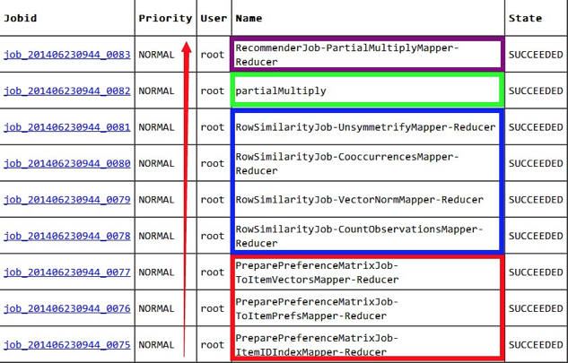

mahout推荐源码阅读笔记1
mahout在计算推荐结果的过程中会先后启动9个MR任务，这些job的具体执行流程如下图：

其中分成四个部分（3，4两步其实是在同一个job中）
- PreparePreferenceMatrixJob —— 将itemid转成内部index；计算用户向量；计算评价矩阵
- RowSimilarityJob —— 计算每个用户的物品数目；向量归一化；计算相似度；计算协同矩阵
- partialMultiply —— 整合用户向量、评分向量与协同向量
- RecommenderJob —— 计算推荐向量
在逐个介绍每个job之前，先看下他们的父类AbstractJob，这个类定义了方法addOption，parseArguments，getOption，prepareJob等，用来定义选项，参数解析和设置以及配置job，同时实现了Tool接口，所以重点关注每个子类的run方法。
mahout推荐从RecommenderJob开始，在run方法中，开始是一系列的选项定义及设置，之后就是流程中的第一部分 —— 通过ToolRunner的run方法执行PreparePreferenceMatrixJob。
ToolRunner.run(getConf(), new PreparePreferenceMatrixJob(), new String[]{
"--input", getInputPath().toString(),
"--output", prepPath.toString(),
"--minPrefsPerUser", String.valueOf(minPrefsPerUser),
"--booleanData", String.valueOf(booleanData),
"--tempDir", getTempPath().toString(),
});
这里指定了输入目录（对应命令行选项--input），输出目录（临时目录的子目录preparePreferenceMatrix），每个用户对应的最少物品数，是否是boolean数据以及临时目录（对应命令行选项--tempDir）。
1. PreparePreferenceMatrixJob
PreparePreferenceMatrixJob同样继承自AbstractJob，在run方法中，也是类似的选项定义和设置。接下来主要是3个prepareJob方法，他们分别指定了将itemid转成内部index、计算用户向量、计算评价矩阵所需的MR任务，同时还有各自的输入输出目录和文件格式，key、value类型。
1.1. itemid转成内部index
第一个prepareJob方法如下：
//convert items to an internal index
Job itemIDIndex = prepareJob(getInputPath(), getOutputPath(ITEMID_INDEX), TextInputFormat.class,
ItemIDIndexMapper.class, VarIntWritable.class, VarLongWritable.class, ItemIDIndexReducer.class,
VarIntWritable.class, VarLongWritable.class, SequenceFileOutputFormat.class);
输入目录通过命令行选项--input指定，输出目录是preparePreferenceMatrix的子目录itemIDIndex。这里，mapper和reducer分别是ItemIDIndexMapper和ItemIDIndexReducer。
mapper的输出输出分别是
| 输入 | 输出 |
|---|---|
| userid itemid prefval分隔字符串 | index->itemid |
map方法如下：
protected void map(LongWritable key,
Text value,
Context context) throws IOException, InterruptedException {
String[] tokens = TasteHadoopUtils.splitPrefTokens(value.toString());
long itemID = Long.parseLong(tokens[transpose ? 0 : 1]);
int index = TasteHadoopUtils.idToIndex(itemID);
indexWritable.set(index);
itemIDWritable.set(itemID);
context.write(indexWritable, itemIDWritable);
}
调用工具类TasteHadoopUtils的方法splitPrefTokens读取三元组(userid itemid prefval)到字符数组token中，支持的分割符是\t和,。transpose是处理userid和itemid次序相反的情形。紧接着调用方法idToIndex将itemid转成内部index，该方法内部执行0x7FFFFFFF & Longs.hashCode(id) % 0x7FFFFFFE。
reducer的输入输出分别是
| 输入 | 输出 |
|---|---|
| index->itemid | index->itemid |
reduce方法如下：
protected void reduce(VarIntWritable index,
Iterable<VarLongWritable> possibleItemIDs,
Context context) throws IOException, InterruptedException {
long minimumItemID = Long.MAX_VALUE;
for (VarLongWritable varLongWritable : possibleItemIDs) {
long itemID = varLongWritable.get();
if (itemID < minimumItemID) {
minimumItemID = itemID;
}
}
if (minimumItemID != Long.MAX_VALUE) {
minimumItemIDWritable.set(minimumItemID);
context.write(index, minimumItemIDWritable);
}
}
一个index对应不同的itemid，为什么取最小值
由于测试数据中itemid都可以用int类型表示，所以index与itemid是一致的，后面就不再区分index和itemid，统一表示成itemid。这一点可以通过输出结果看到：
[root@datanode1 bin]# hadoop fs -libjars ../examples/target/mahout-examples-0.9-job.jar -text /theme/temp/0715/preparePreferenceMatrix/itemIDIndex/part-r-00000
Warning: $HADOOP_HOME is deprecated.
101 101
102 102
103 103
104 104
105 105
106 106
107 107
注意：在生产环境下，数据是从hive中导出的，由于hive指定自定义分隔符报错，只能使用默认分割符
\001，所以需要修改工具类TasteHadoopUtils的分隔符正则表达式为Pattern.compile("[\t,\001]")
1.2 计算用户向量
继续第二个prepareJob方法：
//convert user preferences into a vector per user
Job toUserVectors = prepareJob(getInputPath(),
getOutputPath(USER_VECTORS),
TextInputFormat.class,
ToItemPrefsMapper.class,
VarLongWritable.class,
booleanData ? VarLongWritable.class : EntityPrefWritable.class,
ToUserVectorsReducer.class,
VarLongWritable.class,
VectorWritable.class,
SequenceFileOutputFormat.class);
输入目录通过选项--input指定，输出目录是子目录userVectors。mapper和reducer分别是ToItemPrefsMapper和ToUserVectorsReducer。其中，ToItemPrefsMapper继承自ToEntityPrefsMapper，自身没有实现map方法，只能看父类的实现。
mapper输入输出
| 输入 | 输出 |
|---|---|
| userid itemid prefval带有分隔符字符串 | userid->(itemid,prefval)或者userid->itemid |
public void map(LongWritable key,
Text value,
Context context) throws IOException, InterruptedException {
String[] tokens = DELIMITER.split(value.toString());
long userID = Long.parseLong(tokens[0]);
long itemID = Long.parseLong(tokens[1]);
if (itemKey ^ transpose) {
// If using items as keys, and not transposing items and users, then users are items!
// Or if not using items as keys (users are, as usual), but transposing items and users,
// then users are items! Confused?
long temp = userID;
userID = itemID;
itemID = temp;
}
if (booleanData) {
context.write(new VarLongWritable(userID), new VarLongWritable(itemID));
} else {
float prefValue = 0;
prefValue = tokens.length > 2 ? Float.parseFloat(tokens[2]) + ratingShift : 1.0f;
context.write(new VarLongWritable(userID), new EntityPrefWritable(itemID, prefValue));
}
}
首先解析出userID和itemID，如果要支持自定义的分隔符，修改相应的正则表达式。transpose用来处理itemid和userid位置交换的情形。接下来判断如果是boolean数据，不做额外处理；否则尝试获取评分，如果能够获取到，即字符串token长度超过2，取prefval+ratingshift，否则给默认值1.0f。
ratingShift有什么作用，默认值给0
Reducer的输入输出
| 输入 | 输出 |
|---|---|
| userid->(itemid,prefval)或者userid->itemid | userid->(itemid, prefval) |
protected void reduce(VarLongWritable userID,
Iterable<VarLongWritable> itemPrefs,
Context context) throws IOException, InterruptedException {
Vector userVector = new RandomAccessSparseVector(Integer.MAX_VALUE, 100);
for (VarLongWritable itemPref : itemPrefs) {
int index = TasteHadoopUtils.idToIndex(itemPref.get());
float value = itemPref instanceof EntityPrefWritable ? ((EntityPrefWritable) itemPref).getPrefValue() : 1.0f;
userVector.set(index, value);
}
if (userVector.getNumNondefaultElements() >= minPreferences) {
userVectorWritable.set(userVector);
userVectorWritable.setWritesLaxPrecision(true);
context.getCounter(Counters.USERS).increment(1);
context.write(userID, userVectorWritable);
}
}
EntityPrefWritable继承自VarLongWritable，使用instanceof做类型判断，如果是前者，转换后调用getPrefValues()方法来获取评分，后者的情况，评分给1.0f。接下来判断用户评价过的item数目是否超过minPreferences，这个参数就是RecommenderJob中指定的选项minPrefsPerUser，默认为1。
同样的，检查下这一步的输出：
[root@datanode1 bin]# hadoop fs -libjars ../examples/target/mahout-examples-0.9-job.jar -text /theme/temp/0715/preparePreferenceMatrix/userVectors/part-r-00000
Warning: $HADOOP_HOME is deprecated.
1 {101:5.0,103:2.5,102:3.0}
2 {102:2.5,103:5.0,101:2.0,104:2.0}
3 {107:5.0,105:4.5,101:2.5,104:4.0}
4 {103:3.0,106:4.0,101:5.0,104:4.5}
5 {106:4.0,104:4.0,103:2.0,105:3.5,101:4.0,102:3.0}
1.3 计算评价矩阵
第三个prepareJob如下：
//build the rating matrix
Job toItemVectors = prepareJob(getOutputPath(USER_VECTORS), getOutputPath(RATING_MATRIX),
ToItemVectorsMapper.class, IntWritable.class, VectorWritable.class, ToItemVectorsReducer.class,
IntWritable.class, VectorWritable.class);
toItemVectors.setCombinerClass(ToItemVectorsReducer.class);
输入目录是上一步的输出目录userVectors，输出子目录ratingMatrix。mapper和reducer分别是ToItemVectorsMapper和ToItemVectorsReducer。
mapper的输入输出
| 输入 | 输出 |
|---|---|
| userid->(itemid, prefval) | itemid->(userid, prefval) |
protected void map(VarLongWritable rowIndex, VectorWritable vectorWritable, Context ctx)
throws IOException, InterruptedException {
Vector userRatings = vectorWritable.get();
int column = TasteHadoopUtils.idToIndex(rowIndex.get());
itemVectorWritable.setWritesLaxPrecision(true);
Vector itemVector = new RandomAccessSparseVector(Integer.MAX_VALUE, 1);
for (Vector.Element elem : userRatings.nonZeroes()) {
itemID.set(elem.index());
itemVector.setQuick(column, elem.get());
itemVectorWritable.set(itemVector);
ctx.write(itemID, itemVectorWritable);
// reset vector for reuse
itemVector.setQuick(elem.index(), 0.0);
}
}
将rowIndex其实就是userID做一次转换，保存到column。这里多说一句，在mahout中，row对应item，column对应user。接下来遍历向量，itemid作为key，value是vector类型，其中索引是userid，值为prefval。
itemVector.setQuick(elem.index(), 0.0)注释是重用，那么索引为什么给的是elem.index()，而非column。
Reducer的输入输出
| 输入 | 输出 |
|---|---|
| index->(index4userid,prefval) | index->(index4userid,prefval) |
protected void reduce(IntWritable row, Iterable<VectorWritable> vectors, Context ctx)
throws IOException, InterruptedException {
merged.setWritesLaxPrecision(true);
merged.set(VectorWritable.mergeToVector(vectors.iterator()));
ctx.write(row, merged);
}
调用方法mergeToVector，将一组小向量合并成完整向量。例如101->(2:2.0) 101->(5:4.0)合并之后就是101->(2:2.0, 5:4.0)。
这一过程的最终结果：
[root@datanode1 bin]# hadoop fs -libjars ../examples/target/mahout-examples-0.9-job.jar -text /theme/temp/0715/preparePreferenceMatrix/ratingMatrix/part-r-00000
Warning: $HADOOP_HOME is deprecated.
101 {2:2.0,5:4.0,3:2.5,1:5.0,4:5.0}
102 {1:3.0,5:3.0,2:2.5}
103 {2:5.0,5:2.0,1:2.5,4:3.0}
104 {2:2.0,5:4.0,3:4.0,4:4.5}
105 {5:3.5,3:4.5}
106 {5:4.0,4:4.0}
107 {3:5.0}
至此，PreparePreferenceMatrixJob部分就说完了，接下来说下相似度计算RowSimilarityJob。